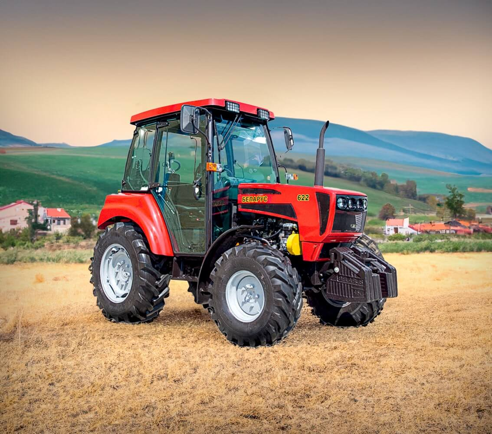

Трактор «Беларус»
Легенда белорусского машиностроения с 1946 года

История Минского тракторного завода (МТЗ) началась в 1946 году в Минске. Предприятие стало одним из символов белорусского машиностроения.
За десятилетия завод выпустил миллионы машин, а тракторы BELARUS получили известность далеко за пределами страны.
Рекорды и достижения
| Показатель | Значение | Описание |
|---|---|---|
| Основание предприятия | 1946 | Начало истории Минского тракторного завода |
| Первые серийные модели | 1953 | Начало серийного выпуска тракторов МТЗ-2 |
| Знаковое семейство | МТЗ-80/82 | Одно из наиболее узнаваемых семейств тракторов |
| Производство | Миллионы машин | Тракторы различных поколений и модификаций |
География BELARUS
Техника белорусского производства используется в разных регионах мира.
| Регион | Применение техники | Особенности |
|---|---|---|
| Беларусь | Сельское хозяйство, коммунальная сфера | Внутренний рынок и производство |
| Страны СНГ | Полевые и транспортные работы | Различные климатические условия |
| Африка | Механизация сельского хозяйства | Развитие сельскохозяйственной инфраструктуры |
| Азия | Сельскохозяйственные работы | Различные направления сотрудничества |
Где создаются тракторы
Производство техники BELARUS объединяет предприятия с различной специализацией.
| Предприятие | Город | Специализация |
|---|---|---|
| Минский тракторный завод | Минск | Головное предприятие, производство тракторов |
| Бобруйский завод тракторных деталей и агрегатов | Бобруйск | Компактная техника, узлы и агрегаты |
| Витебский завод тракторных запасных частей | Витебск | Производство деталей и комплектующих |
| Сморгонский агрегатный завод | Сморгонь | Малогабаритная техника |
| Мозырский машиностроительный завод | Мозырь | Специализированные машины |
Новое поколение BELARUS
Развитие современных тракторов связано с повышением эффективности, внедрением электронных систем и совершенствованием инженерных решений.
История белорусского машиностроения продолжается!